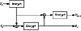

| Previous | Table of Contents | Next |
Pass Phrases
A better solution is to use an entire phrase instead of a word, and to convert that phrase into a key. These phrases are called pass phrases. A technique called key crunching converts the easy-to-remember phrases into random keys. Use a one-way hash function to transform an arbitrary-length text string into a pseudo-random-bit string.
For example, the easy-to-remember text string:
My name is Ozymandias, king of kings. Look on my works, ye mighty, and despair.
might crunch into this 64-bit key:
e6c1 4398 5ae9 0a9b
Of course, it can be difficult to type an entire phrase into a computer with the echo turned off. Clever suggestions to solve this problem would be appreciated.
If the phrase is long enough, the resulting key will be random. Exactly what “long enough” means is open to interpretation. Information theory tells us that standard English has about 1.3 bits of information per character (see Section 11.1). For a 64-bit key, a pass phrase of about 49 characters, or 10 normal English words, should be sufficient. As a rule of thumb, figure that you need five words for each 4 bytes of key. That’s a conservative assumption, since it doesn’t take into account case, spacing, and punctuation.
This technique can even be used to generate private keys for public-key cryptography systems: The text string could be crunched into a random seed, and that seed could be fed into a deterministic system that generates public-key/private-key key pairs.
If you are choosing a pass phrase, choose something unique and easy-to-remember. Don’t choose phrases from literature—the example from “Ozymandias” is a bad one. Both the complete works of Shakespeare and the dialogue from Star Wars are available on-line and can be used in a dictionary attack. Choose something obscure, but personal. Include punctuation and capitalization; if you can, include numbers and non-alphanumeric symbols. Poor or improper English, or even a foreign language, makes the pass phrase less susceptible to a dictionary attack. One suggestion is to use a phrase that is “shocking nonsense”: something offensive enough that you are likely to remember and unlikely to write down.
Despite everything written here, obscurity is no substitute for true randomness. The best keys are random keys, difficult as they are to remember.
X9.17 Key Generation
The ANSI X9.17 standard specifies a method of key generation (see Figure 8.1) [55]. This does not generate easy-to-remember keys; it is more suitable for generating session keys or pseudo-random numbers within a system. The cryptographic algorithm used to generate keys is triple-DES, but it could just as easily be any algorithm.
Let EK(X) be triple-DES encryption of X with key K. This is a special key reserved for secret key generation. V0 is a secret 64-bit seed. T is a timestamp. To generate the random key Ri, calculate:
To generate Vi,+1, calculate:
To turn Ri into a DES key, simply adjust every eighth bit for parity. If you need a 64-bit key, use it as is. If you need a 128-bit key, generate a pair of keys and concatenate them together.
DoD Key Generation
The U.S. Department of Defense recommends using DES in OFB mode (see Section 9.8) to generate random keys [1144]. Generate a DES key from system interrupt vectors, system status registers, and system counters. Generate an initialization vector from the system clock, system ID, and date and time. For the plaintext, use an externally generated 64-bit quantity: eight characters typed in by a system administrator, for example. Use the output as your key.
Imagine that you are a military cryptography organization, building a piece of cryptography equipment for your troops. You want to use a secure algorithm, but you are worried about the equipment falling into enemy hands. The last thing you want is for your enemy to be able to use the equipment to protect their secrets.

Figure 8.1 ANSI X9.17 key generation.
If you can put your algorithm in a tamperproof module, here’s what you can do. You can require keys of a special and secret form; all other keys will cause the module to encrypt and decrypt using a severely weakened algorithm. You can make it so that the odds of someone, not knowing this special form but accidentally stumbling on a correct key, are vanishingly small.
This is called a nonlinear keyspace, because all the keys are not equally strong. (The opposite is a linear, or flat, keyspace.) An easy way to do this is to create the key as two parts: the key itself and some fixed string encrypted with that key. The module decrypts the string with the key; if it gets the fixed string it uses the key normally, if not it uses a different, weak algorithm. If the algorithm has a 128-bit key and a 64-bit block size, the overall key is 192 bits; this gives the algorithm an effective key of 2128, but makes the odds of randomly choosing a good key one in 264.
You can be even subtler. You can design an algorithm such that certain keys are stronger than others. An algorithm can have no weak keys—keys that are obviously very poor—and can still have a nonlinear keyspace.
This only works if the algorithm is secret and the enemy can’t reverse-engineer it, or if the difference in key strength is subtle enough that the enemy can’t figure it out. The NSA did this with the secret algorithms in their Overtake modules (see Section 25.1). Did they do the same thing with Skipjack (see Section 13.12)? No one knows.
Alice and Bob are going to use a symmetric cryptographic algorithm to communicate securely; they need the same key. Alice generates a key using a random-key generator. Now she has to give it to Bob—securely. If Alice can meet Bob somewhere (a back alley, a windowless room, or one of Jupiter’s moons), she can give him a copy of the key. Otherwise, they have a problem. Public-key cryptography solves the problem nicely and with a minimum of prearrangement, but these techniques are not always available (see Section 3.1). Some systems use alternate channels known to be secure. Alice could send Bob the key with a trusted messenger. She could send it by certified mail or via an overnight delivery service. She could set up another communications channel with Bob and hope no one is eavesdropping on that one.
Alice could send Bob the symmetric key over their communications channel—the one they are going to encrypt. This is foolish; if the channel warrants encryption, sending the encryption key in the clear over the same channel guarantees that anyone eavesdropping on the channel can decrypt all communications.
The X9.17 standard [55] specifies two types of keys: key-encryption keys and data keys. Key-Encryption Keys encrypt other keys for distribution. Data Keys encrypt message traffic. These key-encrypting keys have to be distributed manually (although they can be secured in a tamperproof device, like a smart card), but only seldomly. Data keys are distributed more often. More details are in [75]. This two-tiered key concept is used a lot in key distribution.
Another solution to the distribution problem splits the key into several different parts (see Section 3.6) and sends each of those parts over a different channel. One part could be sent over the telephone, one by mail, one by overnight delivery service, one by carrier pigeon, and so on. (see Figure 8.2). Since an adversary could collect all but one of the parts and still have no idea what the key is, this method will work in all but extreme cases. Section 3.6 discusses schemes for splitting a key into several parts. Alice could even use a secret sharing scheme (see Section 3.7), allowing Bob to reconstruct the key if some of the shares are lost in transmission.
Alice sends Bob the key-encryption key securely, either by a face-to-face meeting or the splitting technique just discussed. Once Alice and Bob both have the key-encryption key, Alice can send Bob daily data keys over the same communications channel. Alice encrypts each data key with the key-encryption key. Since the amount of traffic being encrypted with the key-encryption key is low, it does not have to be changed as often. However, since compromise of the key-encryption key could compromise every message encrypted with every key that was encrypted with the key-encryption key, it must be stored securely.
| Previous | Table of Contents | Next |
){kind=link}
){kind=link}